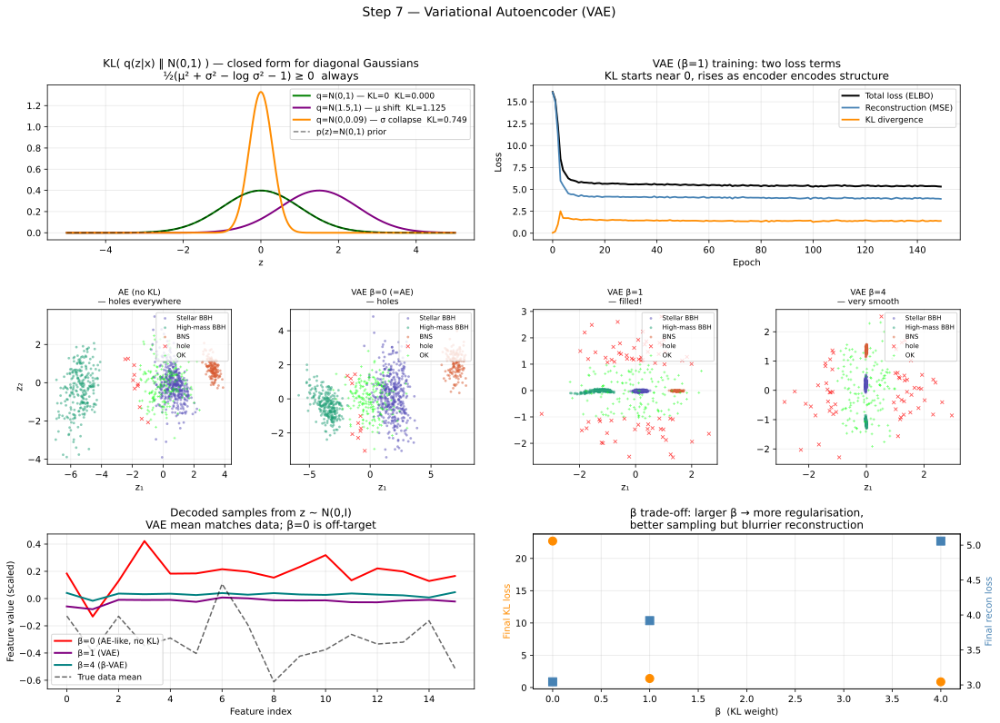

Machine Learning from Scratch: a Physicist's Road to Generative Models VII
Section 7: Variational Autoencoders: Filling the Holes
Where we left off
Step 6 ended with an uncomfortable diagnosis. The autoencoder learns a beautifully organised latent space, with three GW populations separating into three clusters without ever seeing a label. But the moment you try to *generate* new events by sampling a random \(\mathbf{z}\) and decoding it, roughly half your samples land in empty regions between clusters. The decoder, asked to produce an event from a point it was never trained on, outputs incoherent garbage.
The root cause was precise: the reconstruction loss \(\|\mathbf{x} - \hat{\mathbf{x}}\|^2\) says nothing about the shape of the latent distribution. The encoder places codes wherever it likes, creating an uneven scatter of islands surrounded by unexplored voids. We called these voids "holes," and we noted that curing them requires adding a term to the loss that explicitly constrains the latent distribution.
That term is the KL divergence. This section derives it from scratch, starting from the entropy concept introduced in section 2, building through the definition of KL, working out the closed form for Gaussians, and then assembling the full Evidence Lower Bound (ELBO) that defines the Variational Autoencoder. Finally, we address a subtle but critical issue: the reparameterisation trick, which makes gradient descent through a sampling operation possible.
Every piece of mathematics in this section follows from things you already know. No new principles are introduced. Only new combinations of old ones.
From entropy to KL divergence: a gentle build
Recall: entropy measures uncertainty
In section 2 we introduced entropy as a measure of uncertainty in a distribution. For a discrete distribution \(P\) over \(K\) outcomes, Shannon's entropy is:
\[H(P) = -\sum_{k=1}^{K} P(k) \log P(k)\]
A fair coin has entropy \(\log 2 \approx 0.693\) nats. A coin that lands heads 99% of the time has entropy close to zero, almost no uncertainty. The higher the entropy, the more "spread out" or "uncertain" the distribution is.
Cross-entropy: measuring mismatch between two distributions
Cross-entropy, also introduced in section 2 as the classification loss, generalises this idea to compare two distributions. If \(P\) is the true distribution and \(Q\) is our model's approximation:
\[H(P, Q) = -\sum_{k} P(k) \log Q(k)\]
We showed that \(H(P, Q) \geq H(P)\), with equality only when \(Q = P\). The difference between cross-entropy and entropy measures how much extra "surprise" we incur by using the wrong distribution:
\[H(P, Q) - H(P) = -\sum_{k} P(k) \log Q(k) + \sum_{k} P(k) \log P(k) = \sum_{k} P(k) \log \frac{P(k)}{Q(k)}\]
This quantity has a name. It is the Kullback-Leibler divergence, written \(D_{\text{KL}}(P \parallel Q)\):
\[D_{\text{KL}}(P \parallel Q) = \sum_{k} P(k) \log \frac{P(k)}{Q(k)}\]
For continuous distributions, the sum becomes an integral:
\[D_{\text{KL}}(P \parallel Q) = \int P(x) \log \frac{P(x)}{Q(x)} dx\]
The KL divergence is therefore the natural measure of "how different is \(Q\) from \(P\)?". It is always non-negative, this follows directly from Jensen's inequality applied to the concave log function, and it equals zero if and only if \(P = Q\) everywhere. It is not symmetric: \(D_{\text{KL}}(P \parallel Q) \neq D_{\text{KL}}(Q \parallel P)\) in general, which is why it is called a divergence rather than a distance.
The KL divergence between two Gaussians: worked step by step
Before the derivation, here is the key VAE idea in plain language. In a standard autoencoder, the encoder outputs one fixed latent vector. In a variational autoencoder, the encoder instead outputs the parameters of a Gaussian, usually a mean \(\mu(\mathbf{x})\) and variance \(\sigma^2(\mathbf{x})\). We then sample a latent point \(z\) from that Gaussian and pass this sampled \(z\) to the decoder.
So the model does not learn "one code per input", it learns a small distribution of plausible codes per input. To keep these learned latent distributions well-behaved, we push them toward a simple prior, typically \(\mathcal{N}(0,1)\), using a KL penalty. This is exactly why we now need the KL divergence between \(q = \mathcal{N}(\mu, \sigma^2)\) (encoder output distribution) and \(p = \mathcal{N}(0,1)\) (target prior). Let us derive the closed form carefully.
We start from the definition:
\[D_{\text{KL}}(q \parallel p) = \int q(z) \log \frac{q(z)}{p(z)} dz = \int q(z) [\log q(z) - \log p(z)] dz\]
Step 1: Write out the log terms.
The log of a Gaussian \(\mathcal{N}(z; \mu, \sigma^2)\) is:
\[\log \mathcal{N}(z; \mu, \sigma^2) = -\frac{1}{2} \log(2\pi\sigma^2) - \frac{(z - \mu)^2}{2\sigma^2}\]
For \(q = \mathcal{N}(\mu, \sigma^2)\) and \(p = \mathcal{N}(0, 1)\):
\[\log q(z) = -\frac{1}{2} \log(2\pi\sigma^2) - \frac{(z - \mu)^2}{2\sigma^2}\]
\[\log p(z) = -\frac{1}{2} \log(2\pi) - \frac{z^2}{2}\]
Step 2: Take the difference.
The \(\frac{1}{2} \log(2\pi)\) terms cancel:
\[\log q(z) - \log p(z) = -\frac{1}{2} \log \sigma^2 - \frac{(z - \mu)^2}{2\sigma^2} + \frac{z^2}{2}\]
Step 3: Take the expectation under \(q\).
We now need \(\mathbb{E}_{z \sim q}[\log q(z) - \log p(z)]\). We evaluate each term using the two key facts about a Gaussian with mean \(\mu\) and variance \(\sigma^2\): its mean is \(\mathbb{E}[z] = \mu\) and its second moment is \(\mathbb{E}[z^2] = \mu^2 + \sigma^2\).
The first term, \(-\frac{1}{2} \log \sigma^2\), is a constant with respect to \(z\), so its expectation is itself.
The second term: \(\mathbb{E}_q \left[ \frac{(z-\mu)^2}{2\sigma^2} \right] = \frac{1}{2\sigma^2} \mathbb{E} [(z-\mu)^2] = \frac{1}{2\sigma^2} \cdot \sigma^2 = \frac{1}{2}\).
The third term: \(\mathbb{E}_q \left[ \frac{z^2}{2} \right] = \frac{1}{2}(\mu^2 + \sigma^2)\).
Step 4: Assemble.
Putting the three terms together:
\[D_{\text{KL}}(\mathcal{N}(\mu, \sigma^2) \parallel \mathcal{N}(0, 1)) = -\frac{1}{2} \log \sigma^2 - \frac{1}{2} + \frac{1}{2}(\mu^2 + \sigma^2)\]
Rearranging:
\[D_{\text{KL}}(\mathcal{N}(\mu, \sigma^2) \parallel \mathcal{N}(0, 1)) = \frac{1}{2}(\mu^2 + \sigma^2 - \log \sigma^2 - 1)\]
This is a closed-form expression, no integral to evaluate numerically. Let us verify it makes sense. When \(\mu = 0\) and \(\sigma = 1\) (the encoder already matches the prior perfectly), the formula gives \(\frac{1}{2}(0 + 1 - 0 - 1) = 0\). When \(\mu\) moves away from zero or \(\sigma\) deviates from one in either direction, the KL grows. The interactive widget from this step lets you drag \(\mu\) and \(\sigma\) and watch the formula evaluate in real time.
For a \(d\)-dimensional diagonal Gaussian, where each dimension is independent, we simply sum over all \(d\) dimensions:
\[D_{\text{KL}} = \frac{1}{2} \sum_{j=1}^{d} (\mu_j^2 + \sigma_j^2 - \log \sigma_j^2 - 1)\]
This is the exact expression used in the VAE training code. No Monte Carlo, no numerical integration, just a sum of \(d\) scalar terms.
The generative model behind the VAE
We now have the tool we need. Before assembling the full loss function, it helps to be clear about what generative model the VAE is trying to learn.
Quick reminder: up to now, our reconstruction objective is the MSE term (how close \(\mathbf{\hat{x}}\) is to \(\mathbf{x}\)). In a VAE, we add a regularization term: the KL divergence. So the loss is conceptually: reconstruction error (MSE-like term) + KL penalty, where KL pushes the encoder's latent distribution toward the prior \(\mathcal{N}(0,1)\).
We want to model the data distribution \(p_{\theta}(\mathbf{x})\). The VAE does this by introducing a latent variable \(\mathbf{z}\) and writing the joint distribution as:
\[p_{\theta}(\mathbf{x}, \mathbf{z}) = p_{\theta}(\mathbf{x} \mid \mathbf{z}) \cdot p(\mathbf{z})\]
where \(p(\mathbf{z}) = \mathcal{N}(\mathbf{0}, \mathbf{I})\) is the prior, our assumption that latent codes should be standard Gaussian before seeing any data, and \(p_{\theta}(\mathbf{x} \mid \mathbf{z})\) is the decoder network: given a latent code \(\mathbf{z}\), produce a reconstruction \(\mathbf{\hat{x}}\).
To compute \(p_{\theta}(\mathbf{x})\) we would marginalise over \(\mathbf{z}\):
\[p_{\theta}(\mathbf{x}) = \int p_{\theta}(\mathbf{x} \mid \mathbf{z}) p(\mathbf{z}) d\mathbf{z}\]
This integral is intractable, we cannot compute it in closed form for a neural network decoder, and numerical integration over even a modest latent dimension (\(d = 2\)) requires evaluating the decoder at exponentially many points. We need a different approach.
Why is this hard?
- No neat formula: if the decoder were a very simple linear model, we might solve the integral exactly. But the decoder is a neural network (many nonlinear transformations), so there is usually no closed-form expression for this integral.
- Brute force scales badly: numerical integration means testing many possible latent points \(\mathbf{z}\). In \(d\) dimensions, using \(m\) points per axis gives roughly \(m^d\) total points (the curse of dimensionality). That explodes quickly, and each point needs a decoder forward pass.
The key insight of variational inference is to approximate the true posterior \(p_{\theta}(\mathbf{z} \mid \mathbf{x})\), the distribution over latent codes given the observed data, with a simpler distribution \(q_{\phi}(\mathbf{z} \mid \mathbf{x})\) that we can compute. The encoder network plays exactly this role: it takes \(\mathbf{x}\) and outputs the parameters of a Gaussian \(q_{\phi}(\mathbf{z} \mid \mathbf{x}) = \mathcal{N}(\boldsymbol{\mu}_{\phi}(\mathbf{x}), \boldsymbol{\sigma}^2_{\phi}(\mathbf{x}))\).
Deriving the ELBO: step by step
We want to maximise \(\log p_{\theta}(\mathbf{x})\), the log-likelihood of the data under our generative model. We cannot compute it directly, but we can derive a lower bound that we can compute.
Step 1: Introduce the approximate posterior.
We multiply and divide inside the integral by \(q_{\phi}(\mathbf{z} \mid \mathbf{x})\), which is a legal operation (multiplying by one changes nothing):
\[\log p_{\theta}(\mathbf{x}) = \log \int p_{\theta}(\mathbf{x} \mid \mathbf{z}) p(\mathbf{z}) d\mathbf{z} = \log \int q_{\phi}(\mathbf{z} \mid \mathbf{x}) \cdot \frac{p_{\theta}(\mathbf{x} \mid \mathbf{z}) p(\mathbf{z})}{q_{\phi}(\mathbf{z} \mid \mathbf{x})} d\mathbf{z}\]
Step 2: Recognise the expectation.
The integral is now an expectation under \(q_{\phi}(\mathbf{z} \mid \mathbf{x})\):
\[\log p_{\theta}(\mathbf{x}) = \log \mathbb{E}_{q_{\phi}(\mathbf{z} \mid \mathbf{x})} \left[ \frac{p_{\theta}(\mathbf{x} \mid \mathbf{z}) p(\mathbf{z})}{q_{\phi}(\mathbf{z} \mid \mathbf{x})} \right]\]
Step 3: Apply Jensen's inequality.
Because \(\log\) is concave, Jensen's inequality tells us that \(\log \mathbb{E}[X] \geq \mathbb{E}[\log X]\) for any random variable \(X > 0\). Applying this:
\[\log p_{\theta}(\mathbf{x}) \geq \mathbb{E}_{q_{\phi}(\mathbf{z} \mid \mathbf{x})} \left[ \log \frac{p_{\theta}(\mathbf{x} \mid \mathbf{z}) p(\mathbf{z})}{q_{\phi}(\mathbf{z} \mid \mathbf{x})} \right]\]
Step 4: Split the logarithm.
Using \(\log(AB/C) = \log A + \log B - \log C\):
\[\geq \mathbb{E}_{q_{\phi}(\mathbf{z} \mid \mathbf{x})}[\log p_{\theta}(\mathbf{x} \mid \mathbf{z})] + \mathbb{E}_{q_{\phi}(\mathbf{z} \mid \mathbf{x})} \left[ \log \frac{p(\mathbf{z})}{q_{\phi}(\mathbf{z} \mid \mathbf{x})} \right]\]
Step 5: Recognise the KL.
The second expectation is \(-D_{\text{KL}}(q_{\phi}(\mathbf{z} \mid \mathbf{x}) \parallel p(\mathbf{z}))\) by definition:
\[\log p_{\theta}(\mathbf{x}) \geq \underbrace{\mathbb{E}_{q_{\phi}(\mathbf{z} \mid \mathbf{x})}[\log p_{\theta}(\mathbf{x} \mid \mathbf{z})]}_{\text{reconstruction term}} - \underbrace{D_{\text{KL}}(q_{\phi}(\mathbf{z} \mid \mathbf{x}) \parallel p(\mathbf{z}))}_{\text{regularisation term}}\]
This lower bound is the ELBO, the Evidence Lower BOund. Maximising the ELBO pushes \(\log p_{\theta}(\mathbf{x})\) upward (because it is a lower bound), while simultaneously balancing reconstruction quality against latent space regularity. Turning it into a loss function to minimise, we flip the sign:
\[L_{\text{VAE}}(\phi, \theta) = -\mathbb{E}_{q_{\phi}(\mathbf{z} \mid \mathbf{x})}[\log p_{\theta}(\mathbf{x} \mid \mathbf{z})] + D_{\text{KL}}(q_{\phi}(\mathbf{z} \mid \mathbf{x}) \parallel \mathcal{N}(\mathbf{0}, \mathbf{I}))\]
The first term is the reconstruction loss: for a Gaussian decoder it reduces to MSE, exactly as in the autoencoder. The second term is the KL regulariser: it penalises the encoder for producing a distribution over latent codes that deviates from a standard Gaussian. Both terms are now familiar; their combination is what makes the VAE work.
The two terms are in tension. The reconstruction term wants the encoder to produce tight, specific latent codes for each input, small \(\sigma\), \(\mu\) wherever is most convenient. The KL term wants every latent distribution to be as close to \(\mathcal{N}(0, 1)\) as possible, \(\mu = 0, \sigma = 1\) for all inputs. Training finds the balance: latent codes that are informative enough to reconstruct well, but regular enough that the latent space has no holes.
The hyperparameter \(\beta\) controls the weight of the KL term:
\[L_{\beta\text{-VAE}} = L_{\text{recon}} + \beta \cdot D_{\text{KL}}\]
At \(\beta = 0\) the VAE degenerates to a plain autoencoder with holes. At \(\beta = 1\) we have the standard VAE. At \(\beta \gg 1\) (the \(\beta\)-VAE) the latent space becomes very smooth but reconstructions become blurry, because the encoder is forced to use very little of the space. Choosing \(\beta\) is a hyperparameter decision, governed by the same validation-set logic as all previous hyperparameters.
The reparameterisation trick: making sampling differentiable
We now face a subtle but critical problem. The ELBO requires computing the expectation \(\mathbb{E}_{q_{\phi}(\mathbf{z} \mid \mathbf{x})}[\log p_{\theta}(\mathbf{x} \mid \mathbf{z})]\). In practice we approximate this expectation with a single Monte Carlo sample: draw \(\mathbf{z} \sim q_{\phi}(\mathbf{z} \mid \mathbf{x})\), evaluate \(\log p_{\theta}(\mathbf{x} \mid \mathbf{z})\), and use that as the estimate. Then gradient descent updates both \(\theta\) and \(\phi\).
The problem is that sampling is not differentiable. Specifically, the gradient \(\partial \mathbf{z} / \partial \phi\) does not exist in the usual sense, because \(\mathbf{z}\) was drawn from a distribution parameterised by \(\phi\), it is a stochastic node in the computation graph, and PyTorch cannot propagate gradients through it. The gradient of the reconstruction loss with respect to the encoder parameters \(\phi\) is zero by default, which means \(\phi\) never gets updated. The encoder does not learn.
Let us be precise about why. The encoder outputs \(\boldsymbol{\mu}_{\phi}(\mathbf{x})\) and \(\boldsymbol{\sigma}_{\phi}(\mathbf{x})\). We then sample:
\[\mathbf{z} \sim \mathcal{N}(\boldsymbol{\mu}_{\phi}(\mathbf{x}), \boldsymbol{\sigma}^2_{\phi}(\mathbf{x}))\]
The randomness in \(\mathbf{z}\) is entangled with the parameters \(\phi\). When we differentiate the loss with respect to \(\phi\), we need \(\partial \mathbf{z} / \partial \phi\), but \(\mathbf{z}\) was generated by a random draw, there is no deterministic functional relationship between \(\phi\) and the specific value of \(\mathbf{z}\) that was sampled.
The trick: externalise the randomness
The reparameterisation trick separates the randomness from the parameters by rewriting the sample as a deterministic function of both the parameters and an independent noise variable:
\[\mathbf{z} = \boldsymbol{\mu}_{\phi}(\mathbf{x}) + \boldsymbol{\sigma}_{\phi}(\mathbf{x}) \odot \boldsymbol{\epsilon}, \quad \boldsymbol{\epsilon} \sim \mathcal{N}(\mathbf{0}, \mathbf{I})\]
The symbol \(\odot\) denotes element-wise multiplication. The noise \(\boldsymbol{\epsilon}\) is drawn from a fixed standard Gaussian that does not depend on \(\phi\) at all. The parameters \(\phi\) enter only through the deterministic functions \(\boldsymbol{\mu}_{\phi}\) and \(\boldsymbol{\sigma}_{\phi}\).
Now the gradients are straightforward. Because \(\mathbf{z}\) is a deterministic function of \(\phi\) (given \(\boldsymbol{\epsilon}\)):
\[\frac{\partial \mathbf{z}}{\partial \boldsymbol{\mu}_{\phi}} = \mathbf{1}, \quad \frac{\partial \mathbf{z}}{\partial \boldsymbol{\sigma}_{\phi}} = \boldsymbol{\epsilon}\]
Both are simple, well-defined derivatives. The computation graph is now deterministic — PyTorch can trace through \(\mathbf{z} = \boldsymbol{\mu} + \boldsymbol{\sigma} \odot \boldsymbol{\epsilon}\) just as it traces through any other arithmetic operation, and gradients flow back to \(\phi\) without obstruction.
The figure below shows all three distributions in the reparameterisation picture. The standard Gaussian \(\boldsymbol{\epsilon} \sim \mathcal{N}(0, 1)\) is fixed and external. The encoder shifts and scales it to produce \(\mathbf{z} \sim q_{\phi}(\mathbf{z} \mid \mathbf{x})\). The KL term measures how far this shifted-and-scaled distribution is from the prior \(p(\mathbf{z}) = \mathcal{N}(0, 1)\).
*Figure 1: KL divergence tab: drag \(\mu\) and \(\sigma\) to see the encoder distribution (purple) move relative to the prior (green) and watch the closed-form KL value update. The green shading is the overlap between the two distributions; maximum overlap means minimum KL. Reparameterisation tab: the three-distribution picture, fixed noise \(\epsilon\), shifted sample \(z\), and the prior \(p(z)\) that the KL term is pushing \(z\) toward.*
One practical detail: predict log-variance, not variance
In code, the encoder outputs \(\log \sigma^2\) rather than \(\sigma^2\) directly. The reason is that \(\sigma^2\) must be positive, but the output of a linear layer can be any real number. By predicting the logarithm, which is unconstrained, and exponentiating to recover \(\sigma^2 = \exp(\log \sigma^2)\), we guarantee positivity without any clipping or special activation function. The KL formula becomes:
\[D_{\text{KL}} = \frac{1}{2} \sum_{j=1}^{d} (\mu_j^2 + e^{\ell_j} - \ell_j - 1), \quad \text{where } \ell_j = \log \sigma_j^2\]
This is a numerically stable expression that feeds directly into PyTorch's autograd.
What changes in the architecture
The VAE differs from the autoencoder in exactly one place: the encoder. Instead of outputting a single latent vector \(\mathbf{z}\), it outputs two vectors, \(\boldsymbol{\mu}_{\phi}(\mathbf{x})\) and \(\log \boldsymbol{\sigma}^2_{\phi}(\mathbf{x})\), using two separate linear layers that branch from the shared encoder trunk. Everything else is identical: the decoder architecture is unchanged, the optimiser is still the same (e.g. Adam optimizer), the reconstruction term is still MSE. The only addition to the training loop is the two-line KL computation and its addition to the loss.
The decoder runs in exactly the same way at inference time. To generate a new event, draw \(\mathbf{z} \sim \mathcal{N}(\mathbf{0}, \mathbf{I})\) and pass it through the decoder. Because the KL term has forced every encoder distribution toward this prior, the decoder has been trained on samples from throughout the prior, there are no holes, and every point in the prior's support produces a plausible output.
What the figures show
The accompanying Jupyter notebook produces a two-row, four-column figure summarising the full comparison.

*Figure 2: Top-left: three encoder distributions at different \((\mu, \sigma)\) values plotted against the \(\mathcal{N}(0, 1)\) prior, with their KL values. The green distribution \((\mu = 0, \sigma = 1)\) has KL=0; the others are penalised proportionally to their deviation. Top-right: the two loss components during training, reconstruction MSE falls quickly, while the KL term rises from zero as the encoder learns to encode structure while staying close to the prior. Middle row: latent spaces for four models, plain AE, VAE with \(\beta = 0\), \(\beta = 1\), and \(\beta = 4\). Red crosses are random \(\mathcal{N}(0, 1)\) samples landing in holes; green plusses land in the trained region. From left to right, the hole fraction falls from ~50% to near zero. Bottom-left: mean decoded features from 300 random samples for each model, the \(\beta = 0\) mean is displaced from the true data mean; \(\beta = 1\) and \(\beta = 4\) match it. Bottom-right: the \(\beta\) trade-off, KL decreases and reconstruction error increases as \(\beta\) grows.*
What the code does
The hands-on material for this section is in a dedicated Jupyter notebook in the accompanying GitHub repository ↗. Each section of this series has its own notebook, so you can work through them independently and at your own pace without wading through unrelated code 😇.
The accompanying tutorial notebook ↗ is divided into five parts. Part A verifies the KL formula numerically before any neural network appears: it computes \(D_{\text{KL}}(\mathcal{N}(\mu, \sigma^2) \parallel \mathcal{N}(0, 1))\) using the closed form and also via Monte Carlo sampling for five different \((\mu, \sigma)\) combinations and prints both values side by side. The two columns should agree to within 0.01 for all test cases. This step is important: never trust a KL formula you have not verified empirically on at least one test case.
Part B reconstructs the same three-population GW dataset from section 6 so that the latent space plots are directly
comparable between the two articles. Part C defines the VAE architecture, highlighting the two-branch encoder that outputs \(\boldsymbol{\mu}\) and \(\log \boldsymbol{\sigma}^2\) separately, and the reparameterise() method that implements \(\mathbf{z} = \boldsymbol{\mu} + \exp(\frac{1}{2}\log\boldsymbol{\sigma}^2) \odot \boldsymbol{\epsilon}\). Read this method carefully and trace through its three lines: compute \(\sigma\) from \(\log \sigma^2\), draw \(\boldsymbol{\epsilon}\), return the sum. That is the entire reparameterisation trick.
Part D trains three VAEs simultaneously; \(\beta = 0, \beta = 1, \beta = 4\), plus a plain autoencoder for comparison, printing the reconstruction and KL components of the loss at every 50th epoch. Watch how the KL component behaves differently for each \(\beta\): for \(\beta = 0\) it is never penalised and drifts; for \(\beta = 4\) it is pushed aggressively toward zero, at the cost of a higher reconstruction term.
Part E is the key comparison. For each model it samples 200 random points from \(\mathcal{N}(0, 1)\) in latent space and measures the fraction that land in holes. The printed table should show the hole fraction falling monotonically from AE (~ 50%) through \(\beta = 0\) (~ 50%, same as AE) to \(\beta = 1\) (roughly 5-15%) to \(\beta = 4\) (near zero). This is the empirical proof that the KL term fills the holes.
The running scorecard
| Feature | Regression | Classification | Neural Net | Regularisation | Density Est. | Autoencoder | VAE |
|---|---|---|---|---|---|---|---|
| Output | \(\hat{y}\) | \(p\) | \(p\) | \(p\) | \(p(x)\) | \(\hat{\mathbf{x}}\) | \(\hat{\mathbf{x}}, \boldsymbol{\mu}, \boldsymbol{\sigma}\) |
| Loss | MSE | CE | CE | \(CE + \alpha||\theta||^2\) | \(-\log p\) | MSE | MSE + \(\beta\) KL |
| Labels? | Yes | Yes | Yes | Yes | No | No | No |
| Learns | \(p(y|x)\) | \(p(y|x)\) | \(p(y|x)\) | \(p(y|x)\) | \(p(x)\) | \(E(\mathbf{x})\) | \(q(\mathbf{z}|\mathbf{x})\) |
| Generates? | No | No | No | No | Yes | Unreliably | Yes |
| Exact \(p(x)\)? | — | — | — | — | Yes (low-D) | No | No (ELBO) |
The last row is the critical new entry. The VAE generates reliably, the KL term has filled the holes, but its log-likelihood is an approximation (the ELBO lower bound) rather than the exact value. The decoder outputs a mean reconstruction, which means generated samples are slightly blurry: the model has averaged over all the ways a given latent code could be decoded. This blurring is a direct consequence of the Gaussian decoder assumption, and it is the remaining limitation that motivates the following section on normalising flows.
The followong section (8) asks: what if, instead of using an approximate lower bound, we could compute the exact log-likelihood of the data directly? That is what normalising flows achieve, using an invertible neural network and the change-of-variables formula to obtain an exact, tractable \(\log p(\mathbf{x})\) with no approximation and no blurring.